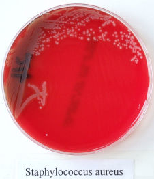
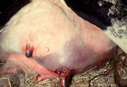
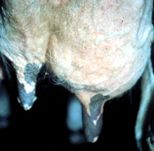
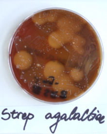
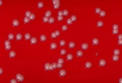
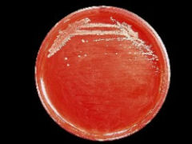

Contagious Mastitis
Staphylococcus aureus
Staphylococcus aureus is generally an obligate parasite of the mammary gland. However, it is probably the most important contagious pathogen in New Zealand and many other countries with developed dairy industries. It is economically very important due to milk production losses it causes and costs to control it. Reduced production is the major cause of economic loss and there may be high cull or death losses.
Staphylococcus aureus predominantly causes chronic subclinical mastitis with elevated somatic cell counts. It can cause acute clinical mastitis and peracute gangrenous mastitis (black mastitis) with toxaemia and death. Milk-producing tissue in the mammary gland is damaged during chronic infection and declines in quarter milk yield of up to 45% occur. Induration, fibrosis, abscessation and atrophy of the affected quarter may develop slowly with only occasional clinically apparent flare-ups. The signs of intramammary infection may be subtle and can be missed. Severe disease usually develops early in lactation.
A herd with effective mastitis control should have less than 3% of cows infected with Staphylococcus aureus, although it remains a common pathogen in NZ. Once established within a herd, it is difficult, if not impossible, to eliminate. Chronic infections, resistance to antibiotics and difficulty in diagnosis typify this organism.
The source of infections is infected quarters of cows and heifers or sores and lesions on teat skin. Transmission occurs by contaminated fomites during milking. Staphylococcus aureus is a common resident of teat end lesions.
The number of bacteria in the milk of an infected cow shows cyclic variation. Bacterial numbers may be high for a while, followed by a period with low to non-detectable numbers. A negative bacterial culture result might be found in an infected cow when milk samples are collected while there is no shedding of the organism and repeated culturing may be necessary because of this.
Laboratory diagnosis
- Gram positive cocci.
- Coagulase positive.
- Blood agar - creamy to golden colonies, haemolytic or non haemolytic.
- Mannitol salt media +- yellow colonies.
Treatment
- Lactational therapy 10-50% success.
- Dry cow therapy 50-70% success.
Mastitis caused by Staph. aureus may be extremely difficult to control by treatment. Some strains are resistant to many antimicrobials resulting from genetic mutations. Antibiotic penetrance characteristics and L-forms of bacteria can limit the effect of treatment. There is moderate susceptibility to antibiotics when an infection first establishes but chronic infections usually are refractory to treatment. Dry cow therapy gives better results than treatment during lactation, but chronic infections can persist into subsequent lactations despite this. The cure rates are higher in first time infected animals. Staphylococcus aureus is often sensitive to many antibiotics in vitro. Treatment during lactation often fails and results in recurrences because the organism is inaccessible to antibiotics within abscesses, walled off tissues and macrophages.
Gangrenous (Black) mastitis - euthanasia or supportive treatment - antibiotics, fluids, NSAID’s, teat amputation for drainage. If more than one quarter is involved, euthanasia is probably the best option.
Staphylococcus aureus
Photo Kiro R Petrovski, 2008

Black mastitis
Note changes in colour, oedema. Skin may exude serum and/or crack open.

Shrunken quarter as result of chronic mastitis

Streptococcus agalactiae
Intramammary infections are usually chronic with occasional flare-ups.
This is a highly contagious obligate udder pathogen, whose source is other infected animals, usually introduced to a farm through purchasing infected animals. Unhygienic milking procedures promote the spread of this organism whereas hygienic procedures control it. This type of mastitis was the main type in the world before intramammary antibiotic treatment was introduced.
Laboratory diagnosis
- Gram positive cocci in long chains.
- Catalase negative.
- Blood agar - translucent colonies with a clear zone of haemolysis.
- Esculin negative.
- CAMP positive.
- Lancefield group B.
Treatment
Strep. agalactiae is Beta-lactam sensitive so penicillin-based drugs are the treatment of choice.
Lactational and dry cow therapies produce more than 90% success.
This organism can be eradicated.
It commonly is eliminated completely from a herd using dry cow therapy.
Streptococcus agalactiae
Photo Kiro R Petrovski, 2008

Coagulase-negative staphylococci (CNS)
Coagulase-negative staphylococci are minor pathogens of the bovine udder that rarely causes clinical mastitis. However, some strains may cause elevated somatic cell counts. They may be found as normal skin residents. Some of their characteristics are similar to those of contagious pathogens. The main sources are infected quarters and cows’ skin, particularly teat skin.
Infections are more prevalent in herds not practicing teat disinfection or using dry cow therapy. High prevalence indicates failure to control spread of contagious pathogens.
Laboratory diagnosis
- Gram positive cocci.
- Blood agar - creamy white colonies, mostly non haemolytic.
- Catalase positive.
- Coagulase negative.
Treatment
- Beta-lactam sensitive.
- Generally there is a response to lactational therapy.
- Dry cow therapy produces high cure rates.
- Teat disinfection and effective milking hygiene control mastitis caused by CNS. Iodine teat disinfectants are reported to be superior to other chemicals.
Corynebacterium bovis
Subclinical infections are usual but it can cause mild clinical cases. It is considered a minor pathogen of the bovine mammary gland that generally limits its colonisation to the teat canal. The source of infection is infected quarters. The isolation of C. bovis from milk cultures indicates poor teat disinfection procedures or products. Effective post-milking teat sanitation and dry cow therapy should eliminate any problem.
Laboratory diagnosis
- Pleomorphic, non-spore forming gram-positive rods.
Blood agar - small white non-haemolytic dry colonies.
Treatment
Beta-lactam sensitive but treatment with antimicrobials is not normally indicated.
Corynebacterium bovis


GO BACK TO THE microbiology PAGE